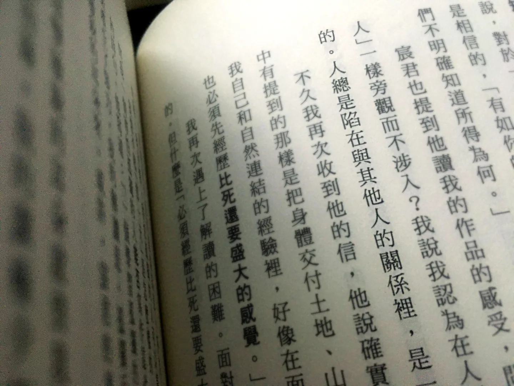

部落格 · 閱讀&生存報告
階段回顧｜三年，讀研究所的日子
甫畢業時，就想寫寫讀研究所這段的感想，想不到一年時間就這麼過去了。怎麼也想不到成績吊車尾、壓根不覺得會讀研究所的我，居然讀了並讀完了，滿滿收穫的這段時間，何其幸運。

我為什麼讀研究所？
大學畢業後，在一家互動科技公司做專案企劃（工作內容卻是專案經理），第五個月時感覺到撞牆期，部門沒有主管領導、看著老闆對客戶信口開河，都能預期最後會因不能做出預期產品而受責難（事實上也正在發生）而感到痛苦卻對此無能為力。
在「難道工作就是這樣違反良心和道德嗎？」的動搖與糾結時，正好大學老師聯繫幫忙展覽工作而吃飯聊聊，被推了一把報考研究所，此時是12月下旬。
風風火火地在1月下旬離職，一邊過年一邊準備備審資料，寄出後開始準備履歷，打算找兩份工讀體驗人生，養得活自己是必須的。接著3月開始，在一個基金會兼職，就與之糾纏三年半的時光，橫跨了我整個研究所生涯。
到這裡，似乎還沒有回答「為什麼念研究所？」，老實說報考是半推半就下的衝動決定（「報考」這個動作就是繳錢而已），當時在工作上覺得動彈不得，只覺得無論如何人生都得前進。真正離職時，也同時幫自己找別的後路––找一份兼職，如果沒考上研究所，起碼養得起自己、接著再找一份正職工作而已；如果真的考上了，它也只是選項之一。
當確定考上時，也就順理成章決定就讀了。
然而，對於讀這個研究所目的、對未來工作的幫助（或關聯性），其實仍舊模糊。科系本身的新穎，涉及藝術人文、社會科學、行銷管理等多元內容，也就給了逃避回答問題的空間，我似乎難以否認自己不是「為了逃避工作而讀研究所」的那種人。
我在研究所裡學到什麼？
因為不想當個全職學生，所以一邊兼職一邊讀研究所。
雖然忙碌、總有無法平衡的時候，但我從不後悔讓自己陷在這樣的狀態，一來擁有收入養活自己，二來工作的經驗成為學習的養分，無論是兼職工作還是前一份正職工作，這些都使我面對社會科學、管理學等理論時能有素材去對照與思考，除此之外，也透過與不同背景、專業、生命經驗的同學、朋友或同事討論學習的疑惑，打開自己看待一件事情的角度與視野。
例如當時兼職的基金會與環境保育有關，便在課堂中以此為題目、爬梳文獻，從而能從另一個層面去認識基金會的宗旨理念與社會的關係，也思考如果未來有機會投入相關產業，我、做為員工實踐組織理念的同時，自己的價值觀應該擺放在什麼位置等等。
而碩士論文選擇做質性研究時，卻總是無法有自信的肯定其價值，總認為只是自說自話的紀錄與推論，對於探討與分析都建立於自己的判斷而感到不安。（或許這也反映著自己的自卑心理） 「我與他者的距離與關係」成為做研究這段時間一個巨大的命題、質疑自己所處的位置，不僅僅是在研究上，也在工作與生活，我與研究、我與受測者，我與工作、我與社會，我與議題、我與生活、我與友人。
（註：不過友人S倒是認為這樣「對質性研究的困惑」，本科系早在大學時期都會碰到，對於我們這種跨領域的人或跨領域的科系，學校應該更積極幫助學生建立「研究基礎功」，而不讓學生讀研宛如在讀第二個大學。這似乎又涉及研究所大學化的議題，暫且不談啦。）
吳明益說：「我認為在人類的世界裡，是很難有『只觀看不介入』的角色的。人總是陷在與其他人的關係裡，是一種束縛、責任，同時也是一種美。」––《我想告訴你關於那座山的一切》序
當時正好讀到這段，覺得被深刻地擊中心臟。
在研究所這段時間，花了很多時間在思考，不斷的反思、換位、挪用概念，當時的自己想解決的問題其實是自己，而課堂與研究成為自我探索的題材。如果從「研究所的目的是培養學術研究人才」的角度來看，於我而言顯然不是這麼回事。
事後諸葛：讀還是不讀？
大學畢業、歷經第一份工作的我，對於自己有著深深的自卑，說不出自己的「專業能力是什麼」的焦慮、找不到可以肯定自己的挫敗感如影隨形，所幸在兼職中慢慢長出了自信。這是我的幸運。
然而，如果如此肯定兼職經驗的獲得，就讀研究所的必要性就顯得薄弱許多。確實，在兼職與讀研重疊的三年間，所學並未使我對於未來生涯更加明晰，我仍舊無法說出專業能力是什麼、明確希望投入的產業。
現在回望，真的會覺得讀這個研究所沒有其必要性，但我不至於感到後悔。
課堂討論帶來許多全新觀點與視野，結交到志同道合的朋友也在對談間獲得思想與心靈的成長，指導教授的耐心指導、陪伴，伴隨著許多啟發。
我現在已經能夠自信地肯定自己，當時是那麼地努力掙扎、積極地探究問題背後的問題，同時也無比幸運那段時間的所有相遇，在各種感到「卡住」的時候都能獲得指引。
怎麼選都不要緊、哪個選項沒有錯對，當然，做選擇的時候我們總要盤算哪個更值得。選不出來的時候，選喜歡的，可以承擔結果的。只要在當中努力探求，希望從中獲得的目標、或是困惑的解答，所有的選擇都不會白費。沒有選擇是白費的。
如同三年過去，我還是無法回答「我的專業能力是什麼」，但不再為此感到焦慮，因為對於「專業能力」，不停留於畫畫、設計、寫程式能力到哪裡或者某個職業如會計師、律師、醫生的想像，我已經能夠看見自己的優勢、可以施力可以努力的地方了。